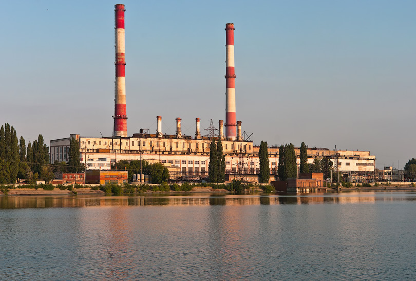
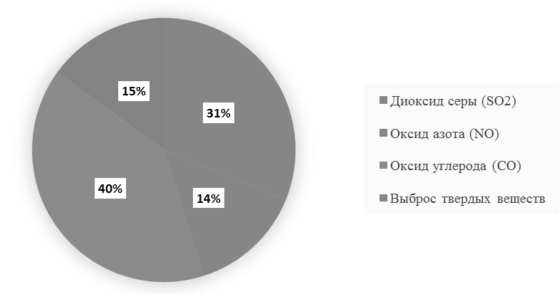

Альтернативные источники энергии
В наше время людям энергии требуется всё больше и больше энергии, поскольку они придумывают всё больше и больше новых изобретений, для которых требуется энергия.
В природе запасы энергии огромны. Ее несут солнечные лучи, ветры и движущиеся массы воды, она хранится в древесине, залежах газа, нефти, каменного угля. Практически безгранична энергия, «запечатанная» в ядрах атомов вещества. Но не все ее формы пригодны для прямого использования.
За долгую историю энергетики накопилось много технических средств и способов добывания энергии и преобразования ее в нужные людям формы. Собственно, и человек-то стал человеком только тогда, когда научился получать и использовать тепловую энергию. Огонь костров зажгли первые люди, еще не понимавшие его природы, однако этот способ преобразования химической энергии в тепловую сохраняется и совершенствуется уже на протяжении тысячелетий.
Воронежская область, прошла путь от маломощных электроустановок местного значения до Воронежской энергосистемы, являющейся составной частью ЕЭС России. На данный момент в Воронежской области есть две крупных электростанций ТЭЦ-1, с электрической мощностью 168 МВт и с тепловой мощностью 1269 Гкал/час, и Нововоронежская АЭС, с электрической мощностью 3034 МВт.
Воронежская ТЭЦ-1 снабжает теплом жителей Левобережного, Ленинского и Железнодорожного районов города, а также свыше тысячи предприятий, в том числе крупнейшие воронежские заводы — Шинный, Воронежсинтезкаучук и Рудгормаш. В 2010 году Воронежская ТЭЦ-1 выработала более 2,5 млн Гкал тепловой энергии.
АЭС развивалась на базе несерийных водо-водяных энергетических реакторов корпусного типа с обычной водой под давлением. В настоящее время в работе находятся энергоблоки № 3, 4, 5, 6 общей электрической мощностью 3034 МВт. Энергоблоки № 1 и 2 уже выведены из эксплуатации.
